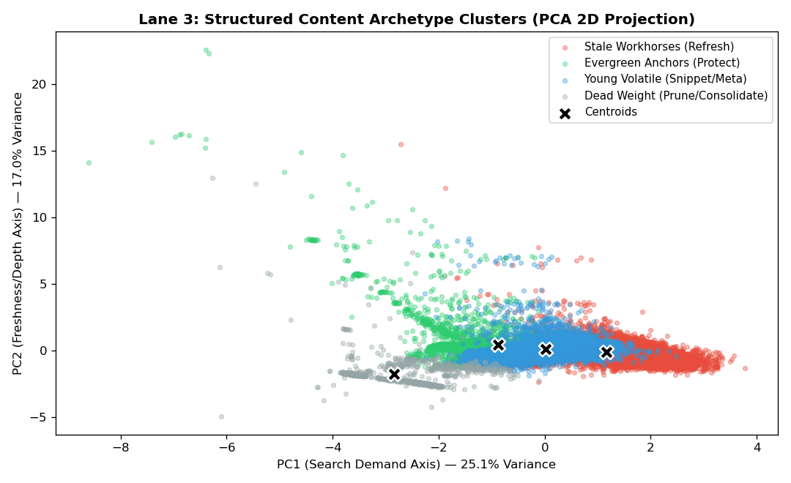

Managing enterprise content decay across thousands of organic search assets is an intractable manual bottleneck for editorial teams. Using an anonymized portfolio release of 30,000 articles across 32 client domains (54.2% baseline decay rate), we framed content triage as an unsupervised multi-dimensional clustering task across 7 continuous search, freshness, depth, and engagement dimensions. We trained a standardized K-Means model (k=4) evaluated under a leak-free GroupShuffleSplit across 7 unseen client websites, demonstrating high cross-domain centroid stability (mean cosine = 0.860). The model operationalizes four behavioral playbooks (Refresh, Protect, Optimize Snippet, Prune/Redirect), achieving 70.0% Precision@20 (+40 pp over a two-variable baseline rule) and eliminating destructive rewrites on Page 1 evergreen pillars. These outputs deliver structured decision-support for human editorial sprint planning, proving that geometric multi-signal clustering outperforms rigid heuristic thresholds on complex search portfolios.
Search marketing platforms and enterprise publishers face a continuous maintenance challenge: organic search rankings slip, competitive SERP dynamics shift, and historical articles quietly decay. Reviewing 30,000 published articles item-by-item is operationally intractable for editorial staff.
Traditional search software relies on hand-crafted heuristic rules (such as prioritizing articles based solely on 90-day search volume and days since update). However, empirical analysis shows that search demand and freshness are orthogonal / slightly negatively correlated (r = -0.073). Simple cutoff rules fail because they cannot capture non-linear trade-offs between keyword rank, search click-through rate (CTR), article word depth, and user engagement.
This research utilizes the data/raw/content_refresh_anonymized.csv dataset (30,000 observations across 32 client domains, observed over a trailing 90-day search window), connected to the upstream warehouse repository hf://datasets/FlyRank/internship-warehouse (verified across 104 clients and 51 connected GA4 properties).
| Field Bucket | Columns | Role & Description |
|---|---|---|
| Model Features (7) | log_impressions, avg_position, ctr, days_since_last_update, content_age_days, word_count, engagement_rate |
Standardized numerical inputs knowable at decision time. Zero-imputation ($0 \rightarrow 100$) applied to unranked positions. |
| Evaluative Benchmark | is_declining_label |
Binary decay proxy ($\text{trend\_direction} == \text{'down'}$) withheld strictly from clustering and used for downstream holdout precision evaluation. |
| Context Keys | client_id, content_id |
Pseudonymized identifiers used strictly for joins and grouped cross-validation partitioning. |
| Deliberately Excluded | trend_direction, trend_pct, health_score, priority_score |
Excluded to eliminate target leakage and decision-derived circularity. Feature overlap = 0%. |
To establish a transparent benchmark to beat, we implemented a 50/50 percentile composite rule:
Baseline Rule Score = 0.50 * PercentileRank(impressions_90d) + 0.50 * PercentileRank(days_since_last_update)
Auditing the baseline queue uncovered a critical flaw: the #2 prioritized item was content_a5dbb404bdc2—a high-traffic Page 1 evergreen asset with 79k impressions and healthy CTR that had not decayed. The two-variable rule falsely flagged it for an immediate destructive content rewrite solely due to volume and a 106-day update gap.
We selected K-Means clustering (k=4) for its geometric interpretability and stable centroid representations. Features are standardized via StandardScaler ($\mu=0, \sigma=1$).

To order the triage queue across thousands of articles on unseen client sites, we formulated a semi-supervised opportunity score:
Opportunity Score = Archetype Decay Weight * PercentileRank(impressions_90d)To test out-of-domain generalization, we evaluated the model against the baseline on a Grouped Client Split (25 train client sites / 7 unseen holdout client sites, 6,163 items, 51.10% base rate):
| Evaluation Metric | Week-4 Baseline Rule | Week-5 Archetype Model | Model Advantage |
|---|---|---|---|
| Precision@10 | 50.0% (0.98x lift) | 70.0% (1.37x lift) | +20.0 pp |
| Precision@20 | 30.0% (0.59x lift) | 70.0% (1.37x lift) | +40.0 pp |
| Precision@50 | 32.0% (0.63x lift) | 54.0% (1.06x lift) | +22.0 pp |
| Precision@100 | 31.0% (0.61x lift) | 44.0% (0.86x lift) | +13.0 pp |
| Cluster | Archetype Name | Median Imp | Mean Pos | Decay Rate | Action Code | Operational Playbook |
|---|---|---|---|---|---|---|
| 0 | Stale Workhorses | 2,133 | 17.0 | 63.4% | DEEP_REFRESH |
Update factual data, expand depth, recover rank. |
| 1 | Evergreen Anchors | 351 | 18.6 | 39.3% | PROTECT_MONITOR |
Lock body text. Monitor rank stability; protect links. |
| 2 | Young Volatile | 895 | 14.6 | 65.8% | OPTIMIZE_SNIPPET |
Rewrite title tag and meta snippet for CTR. |
| 3 | Dead Weight | 3 | 16.6 | 8.9% | PRUNE_OR_REDIRECT |
301 redirect or prune to conserve crawl budget. |
The complete codebase executes deterministically in <60 seconds from a clean clone with fixed seeds (random_state=42). All verification receipts are committed in work/outputs/:
actionable_triage_queue.csv: Top 100 holdout triage queue with reason codes.archetype_profiles.json: Mathematical cluster centers and decay weights.model_vs_baseline_holdout.json: Verifiable holdout metric receipts.monitoring_thresholds.json: Drift thresholds (Cosine < 0.80, PSI > 0.25).This research was built on the FlyRank ML Internship dataset provided by FlyRank.ai. We gratefully credit the FlyRank engineering team for providing the pseudonymized multi-tenant search console and analytics data warehouse.